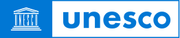
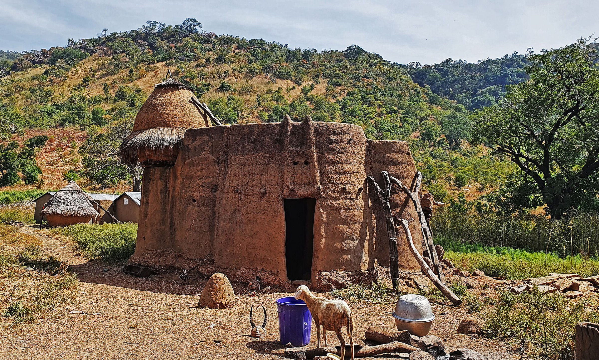

A single, normalised system for the Dakar Regional Office: clean vector masters of the logo, a brand guide that fifteen country teams can follow, ready-made digital and audiovisual assets and institutional templates. Print and signage follow as a separate lot, built on the same masters.
Every version of the logo in circulation is traced back to one vector master. Colour, proportions and the office designation are fixed, so the logo looks identical on a video, a slide and a building.
Blue on light. Default for documents, web and print.
White on UNESCO Blue. Covers, slides, social.
White on Indigo. Video, dark interfaces.

White on photography. Only on calm areas with strong contrast.
Horizontal. Website header, letterhead, email, slides.
Stacked. Social avatars, narrow formats, roll-ups.
Half the logo height on every side. No text, edge or image enters this zone.
Screen
140 px wide
Print
25 mm wide
Favicon
symbol only
Below these sizes, use the symbol on its own.
Stretch or squash
Recolour
Rotate
Add shadows or effects
UNESCO Blue leads. Four regional tones, taken from laterite earth, Sahelian sand, the Atlantic at night and the baobab, give the office its own warmth without competing with the logo.
Laterite and Baobab are accents for sector coding, charts and highlights, never backgrounds for the logo.
One sans serif family for everything, from a video title to a footnote. Clear at small sizes, confident at large ones, with full support for French, Portuguese and the accented letters of West African languages.
Maison Neue
Fifteen countries
Safeguarding living heritage
UNESCO Dakar covers all of UNESCO's fields of competence.
The office liaises with the United Nations Development Coordination Office and supports fifteen Member States in education, sciences, culture, communication and information.
Education for all
L'éducation, la science et la culture
Património vivo da Guiné‑Bissau
Jàng ak xam‑xam ngir ñépp
Real people, real places, credited every time. Natural light, honest colour, no stock clichés of the region.


A kit country teams can fill in minutes: social formats, video graphics and thumbnails, all set in the same type and colour, with motion that stays calm and readable.

Koutammakou, the land of the Batammariba
Post 4:5 Instagram, Facebook, LinkedIn

Living heritage in Nigeria
Read the storyStory 9:16
Take a stance and help us bring change.
Quote card Speeches, campaigns

Rebuilding the mausoleums of Timbuktu
Video thumbnail 16:9 YouTube, web
Lower third, animated Delivered as After Effects and Premiere templates
Regional Office for West Africa, Dakar
Logo sting Opening and closing card for every video
Locked layouts for the documents the office produces every week, built in Word, PowerPoint and Figma so the brand holds even when nobody from communications is in the room.
Regional Office for West Africa
Almadies, Route de la plage de Ngor
BP 3311, Dakar, Senegal
Letter of cooperation
Programme Specialist, Culture
UNESCO Regional Office for West Africa, Dakar
+221 33 864 96 00
Dakar, 23 April 2026. Template for press releases, media advisories and statements, with fixed heading, dateline and boilerplate.
Handled as a separate lot. Production files are drawn from the same vector masters and colour values, with CMYK and Pantone references checked against printed proofs.
Education, science and culture across West Africa
Regional Office for West Africa
Dakar
Everything in one place for staff, partners and media.